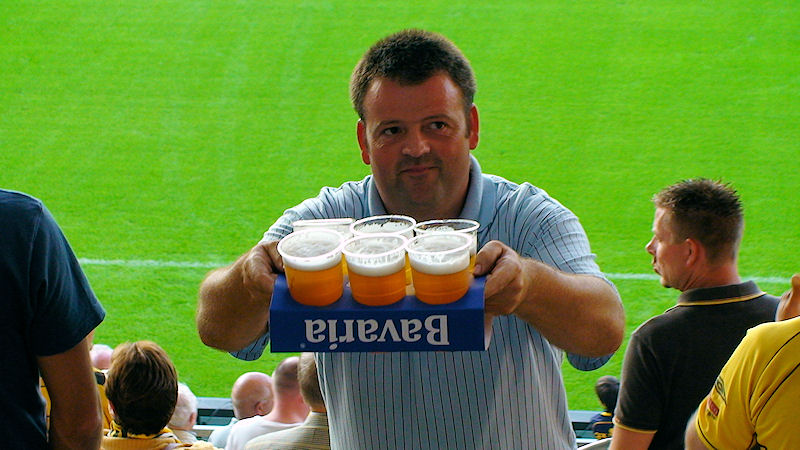

Het seizoen begint feestelijk. De 300 prikbordgebruikers van rjc.nl krijgen
allen een ballon.
Hun busreisje ging niet door. Toch nog 120 supporters uit Hengelo en
omgeving.

Somethings never change... FORZA het nieuwe seizoen!
Sfeermensen op west.

Z16-koempels ook dit jaar weer present.
Matondo dwingt Michailov, (vervanger Boschker), gestrekt te gaan.
Twente domineert in de eerste helft. Veel corners....
Meeuwis heeft de licht geblesseerde oud-collega Tioté een tik gegeven.
En alweer een hoekschop...
Janssen heeft een karatetrap van Tioté gekregen en moet naar de zijlijn
afgevoerd worden.
 |
|
Norbert regelt dit wel...

Na een superkans voor Roda is er plots een counter. Een schot van N'kufo
wordt gepareerd door de uitmuntende Castro.

Elia kan echter scoren uit de rebound: 0-1, (56').

Gaandeweg wordt Roda strijdvaardiger wat wordt beloond met dit doelpunt van
invaller Oper, 1-1, (84').
In de Kick-off was het opvallend rustig. Als vanouds stond de muziek te
hard. Spelers die een kijkje kwamen nemen: Meeuwis, Hadouir, Tyton en
De Man.